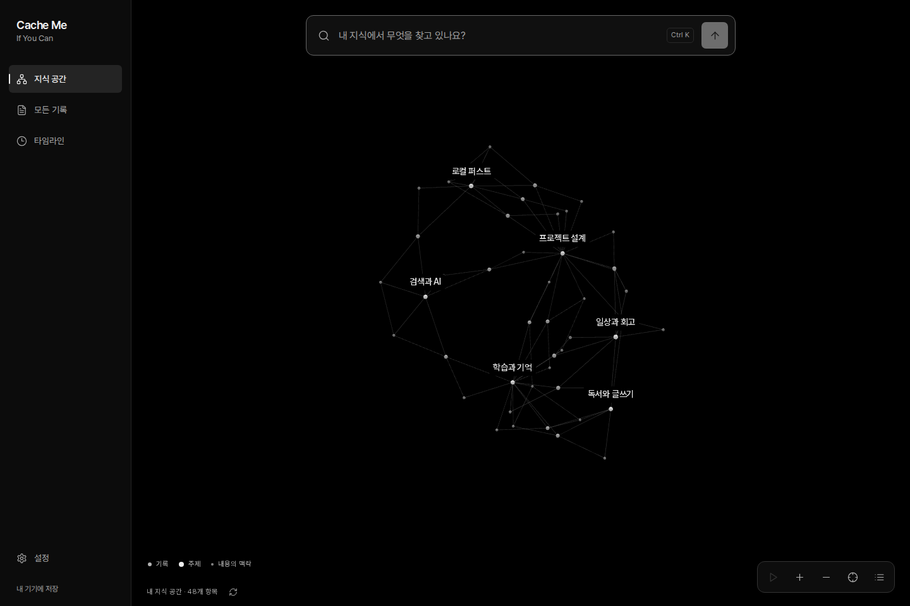

기록 스킬
cache-me가 명시적으로 저장해 달라는 범위를 읽습니다. TCP와 UDP를 따로 복습하려면 본문 두 개로 정리하고 각각 capture_create를 호출합니다. 응답으로 돌아온 실제 저장본을 확인합니다.
기술 가이드 / 시스템
“TCP와 UDP를 각각 캐시미 해줘.” 이 말에서 출발해 어느 프로그램이 도구를 고르고, 어디에 원문이 남고, 무엇이 바깥으로 나가는지 따라갑니다.
MCP · /mcp/HTTP · /api/v1발표자의 노트북에서 실제 서재와 로컬 서버가 실행됩니다. 관람객의 휴대폰은 GitHub Pages에서 설명과 시연을 내려받습니다.
cache-me가 명시적으로 저장해 달라는 범위를 읽습니다. TCP와 UDP를 따로 복습하려면 본문 두 개로 정리하고 각각 capture_create를 호출합니다. 응답으로 돌아온 실제 저장본을 확인합니다.
cache-me-article이 기록을 검색하고 인용할 구간을 다시 읽습니다. 필요한 원문과 예시를 더해 비교표가 있는 글을 쓴 뒤 article_create로 발행합니다. 두 기록과 새 아티클은 각자의 버전으로 남습니다.
React 웹은 목록·상세를 HTTP로 읽고 질문은 SSE로 진행 상황과 최종 결과를 받습니다. 로컬 세션과 CSRF 확인을 거쳐 같은 기록·아티클 서비스를 호출합니다.
웹은 GET /api/v1/session으로 세션을 얻고 변경 요청에는 CSRF 토큰을 보냅니다. 서버는 Host와 Origin을 검사합니다. Codex는 Streamable HTTP 기반 MCP 요청에 로컬 연결용 Bearer 토큰을 사용합니다. ChatGPT OAuth 로그인은 서버가 외부 모델을 사용할 때의 별도 연결입니다.
질문에 답하려는지, 원문을 바꾸려는지에 따라 쓰는 도구가 다릅니다. 아래에서 한 작업을 펼쳐 실제 이름과 결과를 확인하세요.
capture_createcapture_list · capture_getcapture_updatecapture_mergeconcept_create · concept_updateconcept_list · concept_getcapture_set_conceptscapture_retry_conceptsnode_getrelation_create · relation_listrelation_retractsource_getcapture_review_sourcesknowledge_searchknowledge_contextknowledge_neighborsarticle_createarticle_list · article_getarticle_updatecapture_delete_preparecapture_delete웹의 기록과 아티클 경로도 구분됩니다. /api/v1/captures와 /api/v1/articles는 각각 자기 목록과 버전을 제공합니다. /api/v1/sources/resolve는 과거 인용을 읽을 때 사용합니다.
쓰기 전에 읽은 기대 revision과 필요한 상태 버전을 보냅니다. 다른 변경이 먼저 반영되면 VERSION_CONFLICT가 돌아옵니다. 최신본을 다시 읽고 원하는 수정 범위를 정하면 이전 편집을 덮어쓰는 일을 피할 수 있습니다.
원문은 먼저 SQLite에 남습니다. 후속 작업은 해당 버전을 대상으로 분류·색인을 시도하고 실패 상태를 남깁니다. 주제가 아직 모호한 기록도 목록에서 열 수 있습니다. 새 주제 정의가 생기면 기존 본문에서 근거가 있는 후보를 찾아 연결을 보강합니다.
웹 질문에는 search_knowledge와 read_evidence라는 읽기 도구가 주어집니다. 한 요청에서 도구 호출은 최대 8회, 에이전트의 모델 호출은 최대 9회입니다. 검색하지 못한 구간과 부족한 근거는 답변의 한계에 남깁니다. Codex의 기록 작성 도구는 별도 경로입니다.
본문·버전·주제·검색 색인은 내 기기에 있고 KURE 임베딩도 CPU에서 실행합니다. 웹 답변은 질문과 선택한 근거를, 주제 분류는 해당 본문과 후보 정보를 연결된 외부 모델로 보냅니다. 모델 경계에서 이메일·카드번호·IP 패턴을 가리지만 저장 원문과 출처 위치는 유지합니다. 첫 검색 준비 때는 모델 가중치를 내려받습니다.

서버가 표시할 기록·주제·유효한 연결을 골라 노드와 간선 목록을 만듭니다. React는 선택과 패널을 관리하고 3d-force-graph가 배치·렌더링을 담당합니다. 점들이 서로 가까이 보이는 거리와 저장된 관계는 다른 정보입니다. 연결의 의미는 실제 간선과 원문에서 확인할 수 있습니다.
기본 그래프는 최대 50개 노드와 100개 간선으로 탐색 범위를 제한합니다. 질문이 끝나면 실제로 읽힌 근거 구간을 임시 노드로 겹칩니다. 이 표시를 닫아도 원래 기록은 그대로입니다. 접근 가능한 목록과 패널로도 내용을 읽을 수 있습니다.
manage.py setup이 Python 실행 환경과 웹 번들을 준비합니다. start는 로컬 서버를 시작하거나 같은 서버를 재사용합니다. 기본 주소는 127.0.0.1:52761입니다.
install-codex로 MCP 연결과 두 스킬을 등록합니다. doctor가 실행 환경과 등록 상태를 읽어 진단합니다. 설정을 설치한 뒤 새 Codex 대화에서 도구를 확인합니다.
설정에서 일관된 SQLite 스냅샷과 매니페스트를 ZIP으로 받습니다. 새 환경에서는 빈 데이터 디렉터리에 스냅샷을 배치하고 검색 색인을 새로 준비합니다. 모델 로그인도 새로 연결합니다.